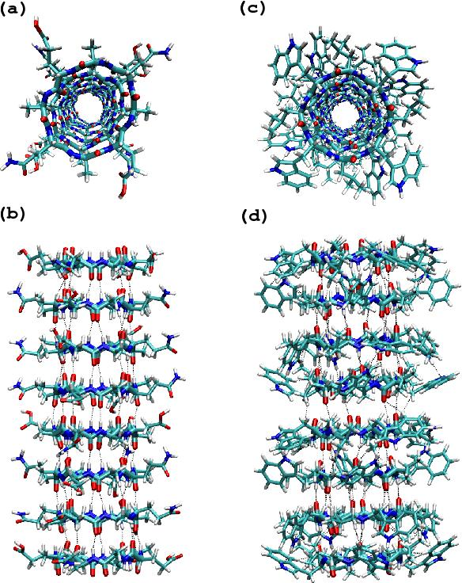
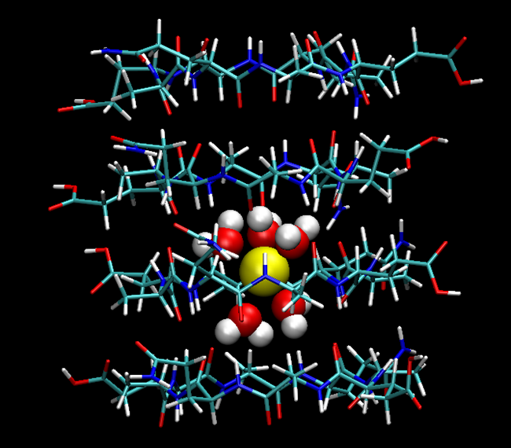
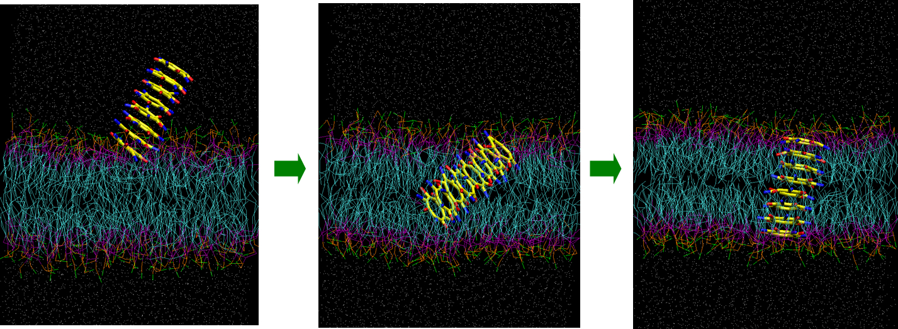
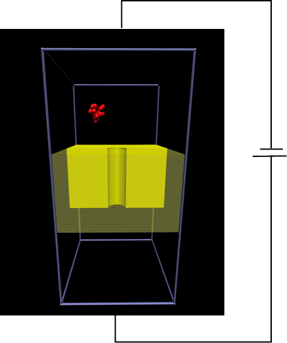

In Korean |
|
| Research Areas |
|
The research in our group is aimed at understanding the mechanisms of physical and chemical processes occurring in complex molecular systems such as cell membranes.
We focus on developing and applying computational and theoretical methods to describe the mechanisms at atomistic or molecular levels.
We mainly use computer simulation approaches that are founded on classical and quantum statistical mechanics.
The research areas that we are interested in include:
- Structure and functions of cyclic peptide nanotubes in cell membranes
Ion channels are proteins, found in cell membranes, that are responsible for ion transport across membranes. Ion channels play a crucial role in biological processes such as nerve and muscle excitation and sensory transduction.
Cyclic peptide nanotubes shown below are a class of synthetic proteins, functioning as an ion channel.

(Hwang et al., J. Phys. Chem. A xxx, XXXX (2009))
we are interested in the selectivity of cyclic peptide nanotubes to cations and the effect of protein-membrane interactions on ion transport.
To address the issues, we use molecular dynamics (MD) and Monte Carlo (MC) simulation techniques as well as mean field theories.

(Hwang et al., J. Phys. Chem. B 110, 26448 (2006))
- Insertion and assembly of proteins into cell membranes
Understanding the mechanisms of insertion and assembly of proteins into cell membranes is one of important problems in biological chemistry.
For example, antimicrobial peptides, which are synthesized after infection, can permeate into bacterial cell membranes and kill bacteria. It has been shown that peptide-lipid interactions and the assembly of peptides into cell membranes play a key role in their function.
Due to the time and length scales involved in biological systems, conventional all-atom (AA) MD simulation methods require significant computational resources.
As an alternative, coarse-grained (CG) modeling, in which a small group of atoms is represented by a single CG bead, reduces the overall system size and increases the computational efficiency.
we use CG MD simulation techniques to investigate the mechanisms of protein insertion and assembly into membranes.

(Hwang et al., J. Phys. Chem. A xxx, XXXX (2009))
- DNA translocation
In DNA translocation, single-stranded or double-stranded DNA molecules pass through ion channels. It has been shown that when DNA molecules enter ion channels, DNA molecules block ion channels and ion currents across ion channels drop. It has been indicated that the current drop depends on the size of DNA bases. Consequently, DNA translocation enables us into a new DNA sequencing method.
Combining Brownian dynamics simulations with kinetic lattice grand canonical Monte Carlo (KLGCMC) approaches, we examine several issues in DNA translocation such as reaction field effects due to membranes and the effect of interactions between DNA bases and ions on DNA translocation.

- Physical properties of shock waves in argon gas
Shock waves are a type of propagating disturbance that is generated by intense explosions or by objects moving at supersonic velocities.
Shock waves are characterized by drastic changes in density, pressure, temperature, and related properties across shock fronts.
We are interested in the physical properties of shock waves propagating through argon gas, for example, kinetic energy distributions of argon molecules in shock waves. For this purpose, we develop and employ nonequilibrium MD (NEMD) simulations.
|
|